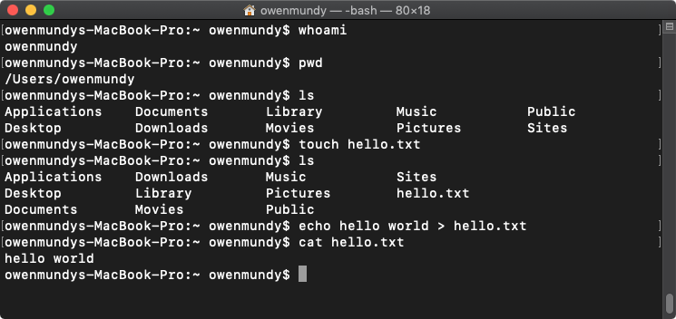
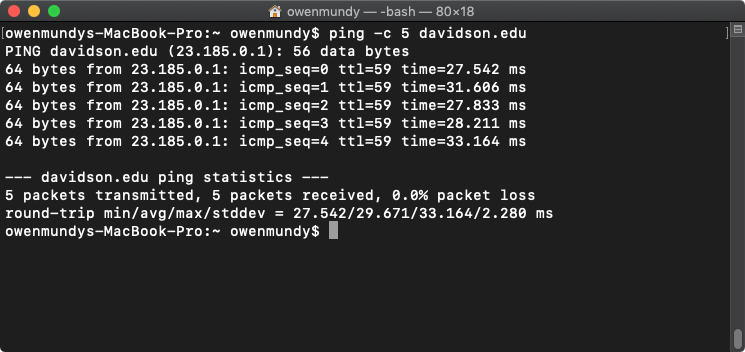

Command Line Crash Course
A short primer for using the command line
Introduction
Review the following sections and perform the activities on your own or with your group.
Perform the task(s) when you see this 👉 emoji
Learning Objectives
Students who complete the following will be able to:
- Explain what the command line is and what it can do
- Open a command line program on their computer and execute basic commands
- Use a web reference to look up shell commands
About the command line
The command line allows you to control your computer via a text interface. Depending on the context, it might also be referred to as a shell, terminal, or console. The following is a quick introduction.

Installation
- Mac - The Terminal application is already installed
- Windows - Install Git Bash or Windows Terminal
- Linux - LXTerminal is already installed
Run commands
👉 Try it out
Open your command line application and note the prompt — the $ % or # symbol — where you will type commands.
- Type each of the following commands at the prompt, pressing return each time.
- If you make a mistake press backspace or Ctl + C to cancel.
| Step | Command | Description |
|---|---|---|
| 1 | whoami |
Display the username of current user |
| 2 | pwd |
Display the full path of your current folder, or working directory |
| 3 | ls |
List the files in your current directory |
| 4 | touch hello.txt |
Create a new file called hello.txt |
| 5 | ls |
List files to confirm the new file was created |
| 6 | echo "hello world" > hello.txt |
Write some text in the new file |
| 7 | cat hello.txt |
View contents of new file (as in "concat) |
| 8 | ping -c 5 davidson.edu |
A networking utility to check the connection to any website. |
| 9 | Search for the command to list files with their modified date. | |
| 10 | Search for the command to open the current folder in your Finder / Windows. |
Congratulations! 🎉 You've completed basic commands in a shell.
Click to view example output from the steps.
 